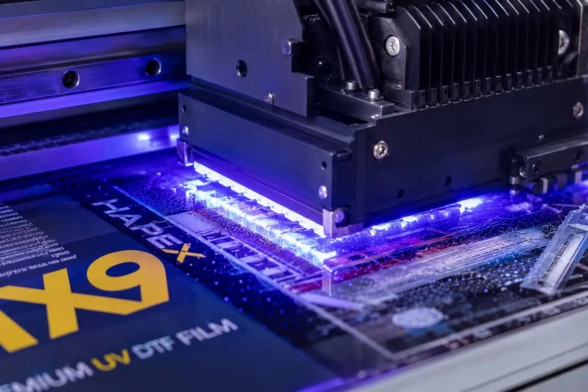
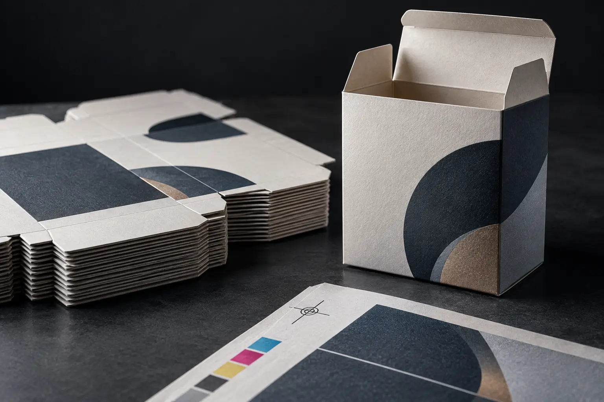
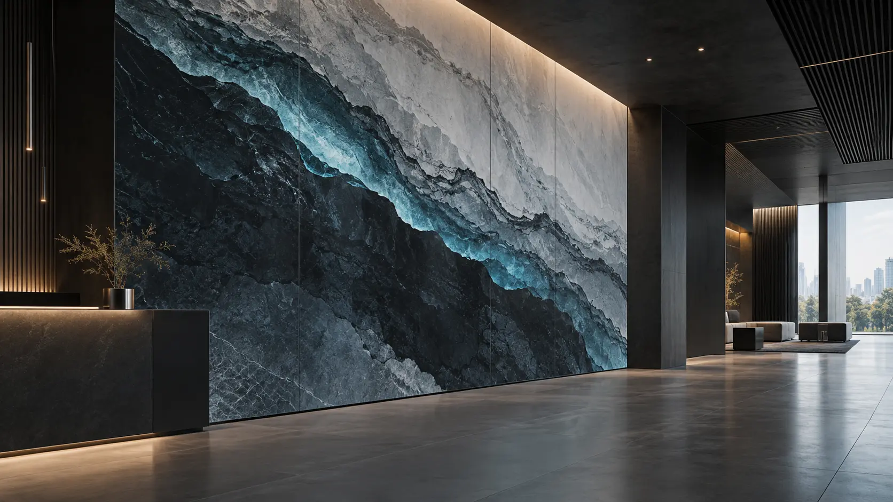

01

UV Hybrid Roll-to-Roll Printing
Production equipment supporting selected large-format, roll-media, and compatible rigid-media workflows within confirmed project scope.
Related methodPROCESS ARCHITECTURE
How the work is produced. HDC considers the production route only after the application, material or surface, geometry, artwork, quantity, finish, and intended handling are understood.
HOW THE WORK IS MADE
HDC uses distinct commercial print methods, each suited to different applications, materials, surfaces, and project conditions.
Final production routes are confirmed after reviewing the actual application, material or surface, geometry, artwork, quantity, finish, and intended use.
Explore commercial servicesUV DTF Transfer for selected hard-surface label and object applications.
↓Direct-to-Object UV Printing for suitable rigid substrates and objects, subject to physical and surface review.
↓Offset Lithography for defined packaging, stationery, and commercial paper or board applications.
↓Large Format Digital for retail environments, signage, and displays.
↓DTF Textile Transfer for selected textile applications, subject to fabric and process review.
↓EQUIPMENT AS PRODUCTION EVIDENCE
These systems support HDC's production routes. They are shown as working equipment, not as separate services or machine-sales categories.
Production equipment supporting selected large-format, roll-media, and compatible rigid-media workflows within confirmed project scope.
Related method
Direct printing equipment for suitable rigid objects and substrates after geometry, clearance, and surface review.
Related method
Production-support equipment used for controlled contouring, cutting, or conversion where the defined job requires it.
Production contextPRODUCTION METHOD — 01
A transfer-based production method that may be considered for selected hard-surface label, decal, and object applications.
PRODUCTION METHOD — 02
Direct-to-object UV printing, using a flatbed production route where appropriate, may be considered when a suitable rigid substrate or object can be physically accommodated and its surface is appropriate for the intended print application.
PRODUCTION METHOD — 03
A commercial sheetfed print method used for defined paper and board applications where format, stock, artwork, quantity, and finish requirements are established.

PRODUCTION METHOD — 04
Large-format digital production may be considered for displays, signage, and physical brand environments where dimensions, substrate, artwork, and project context are defined.

PRODUCTION METHOD — 05
A transfer-based production method that may be considered for selected textile applications after the fabric, artwork, quantity, and intended use are reviewed.

DETERMINE THE ROUTE
Share your application, quantity, dimensions, surface or substrate, and artwork readiness. HDC will identify the verified production method best suited to the job.